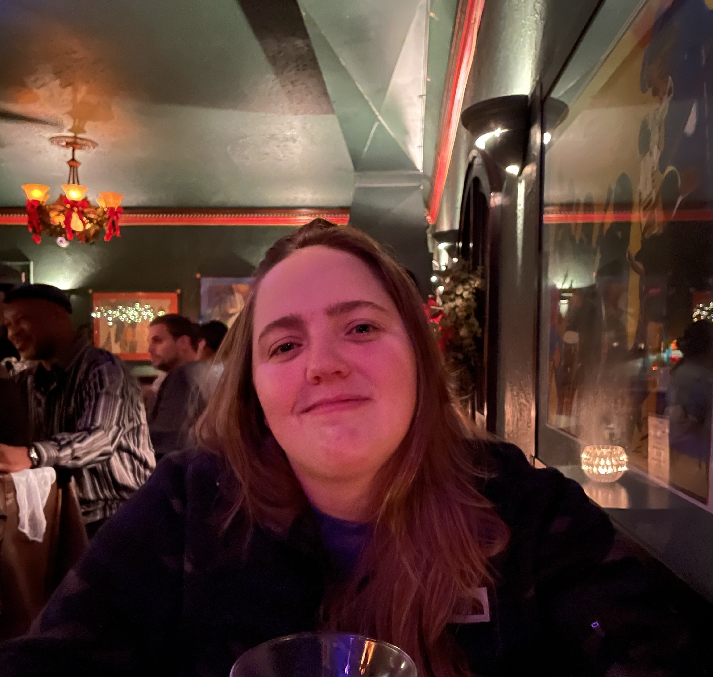

I've spent over 4 years in the Web Development industry. There have been ups and downs through the journey, but it would be unwise to think it's always a sunny day. Currently, I'm taking time to grow my career skill set and explore opportunities that are pushing me outside of my comfort zone. In that, I also want to rediscover my passion in life and begin to enjoy the little things that are often overlooked.
In my personal life, I enjoy taking long walks on the beach and listening to ska music. Joking! Well, kind of. I do enjoy long walks, but more in the woods and mountains. My ultimate dream is to hike the length of the Appalachian Trail. Otherwise you can find me camping with my fiancee (and our dog), listening to records, and exploring cities by way of breweries and restaurants.